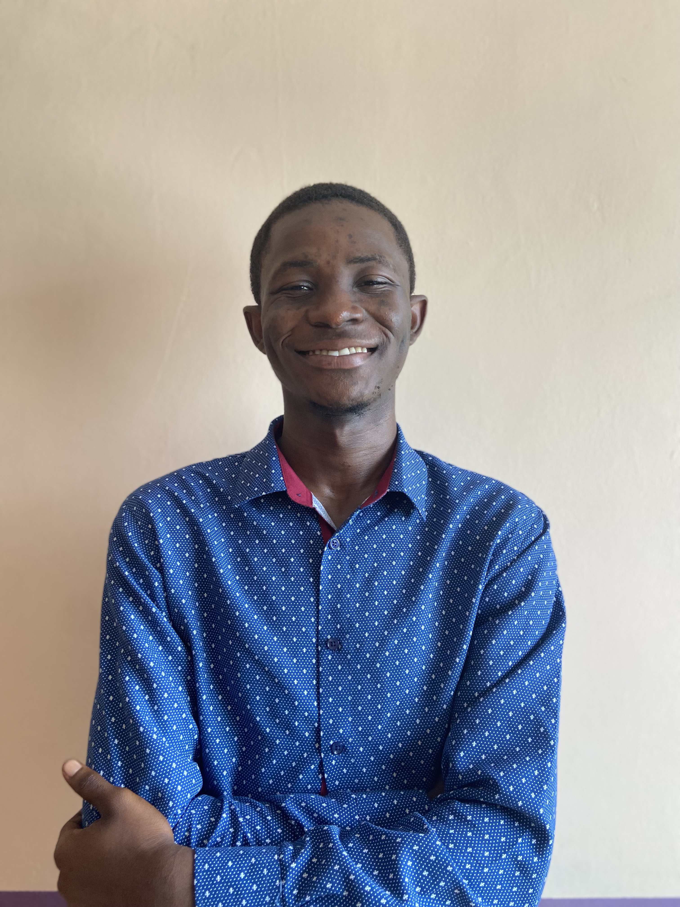

Emmanuel Danso Nyarko

Emmanuel is a class of 2023 computer science bachelor's graduate
from Kwame Nkrumah University of Science and Technology.
His main choise of goto programming languages are the C/C++/D family.
He has experience working on compilers, Operating systems
and is now very interested in how our compilers communicate with our operating system transitioning to how our operating system
communicates with our hardware.
He is obssessed with writing super fast code leading him on a journey to find out how our computers/hardware execute our programs.
He is the founder of E Computer Architecture and Performance Research
Interested in our research, look at what we do E Computer Architecture and Performance Research